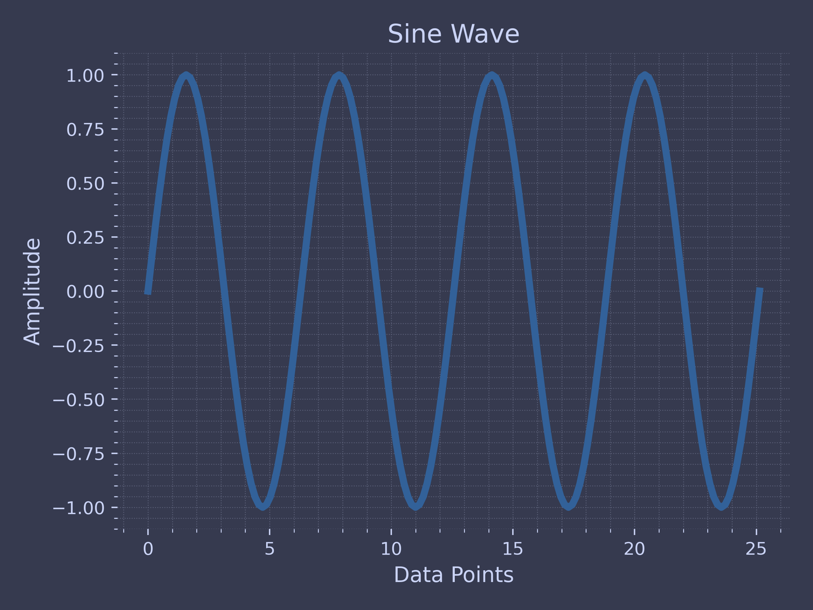
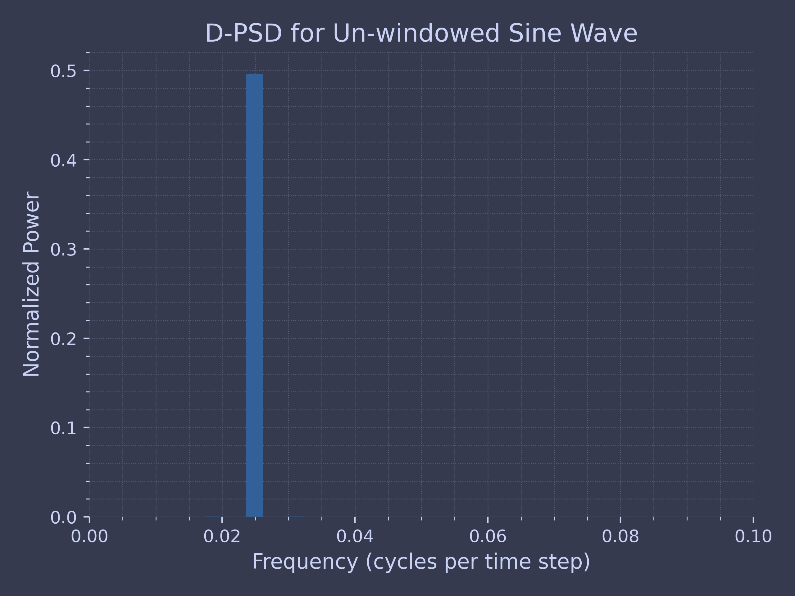
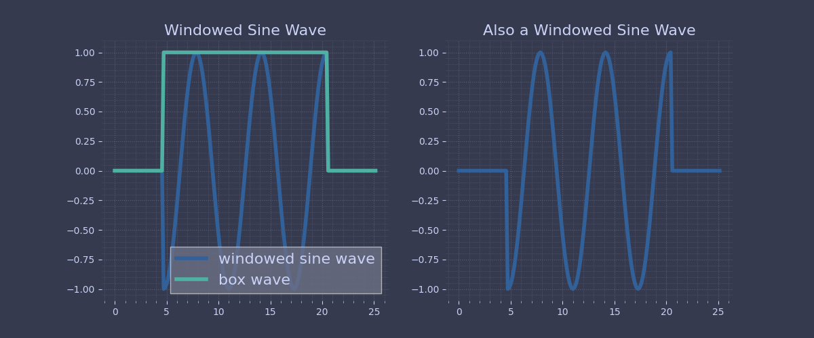
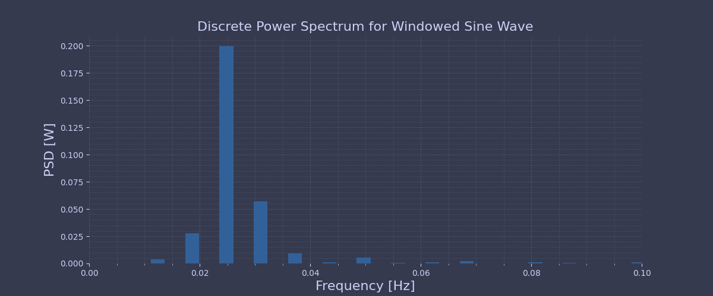

Code for Digital Image Processing Mathematical Fundamentals
Table of Contents
These are the code snippets used in part of .
Introduction
The following code covers the topic of mathematical fundamentals, which includes some examples on:
- convolution,
- fourier transform,
- spectral leakage,
- information theory.
Convolution
Exercise: Convolution 1D
import numpy as np def convolve_1d(signal, kernel): kernel = kernel[::-1] k = len(kernel) s = len(signal) signal = [0]*(k-1)+signal+[0]*(k-1) n = s+(k-1) res = [] for i in range(s+k-1): res.append(np.dot(signal[i:(i+k)], kernel)) return res
Now the function is defined, it is a matter of entering the two arrays and printing the function.
A = [1,1,2,2,1] B = [1,1,1,3] print(convolve_1d(A, B))
[1, 2, 4, 8, 8, 9, 7, 3]
Spectral Leakage
Let’s take a look at an example using a simple sine wave.
First import the necessary modules.
import numpy as np import matplotlib.pyplot as plt import scipy.stats as st import scipy.signal as sig import ChalcedonPy as cp
The following code preconfigures matplotlib to produce figures with consistent quality and style. It is a custom style sheet which configures certain aspects of the matplotlib setting globally which is easily called via the use of function.
# import for custom color cycling from cycler import cycler # define a function to store matplotlib style information def plot_settings_web(size): # define custom default colors for generating image with # consisten color cycling new_colors = ['#326199', '#4fb1a1', '#fcc055', '#eb8d50', '#df6e5b', '#9a031e', '#984ea3'] # define the styles for generating web compatible images. webplot_styles = { 'axes.edgecolor': '1e1e2e', 'axes.facecolor': '363a4f', 'axes.axisbelow' : True, 'axes.grid': True, 'axes.grid.which': 'both', 'axes.spines.left': False, 'axes.spines.right': False, 'axes.spines.top': False, 'axes.spines.bottom': False, 'axes.prop_cycle': cycler(color=new_colors), 'grid.color': '5b6078', 'grid.linewidth': '1.2', 'xtick.color': 'cad3f5', 'xtick.major.bottom': True, 'xtick.labelsize': 10, 'xtick.minor.bottom': True, 'xtick.minor.bottom': True, 'xtick.minor.visible': True, 'xtick.minor.width': 0.5, 'ytick.color': 'cad3f5', 'ytick.major.left': True, 'ytick.minor.left': False, 'ytick.labelsize': 10, 'savefig.facecolor': '363a4f', 'text.color': 'cad3f5', 'lines.linewidth': 4, 'font.size': 16, 'legend.fancybox' : False, 'legend.facecolor' : '6c7086', 'figure.facecolor': '838ba7', } # Apply style sheet for use in matplotlib plt.rcParams.update(webplot_styles) # Define figure size based on the number of figures if size == 1: plt.figure(figsize=(10,6)) elif size == 2: plt.figure(figsize=(12,5)) def grid_settings_web(): plt.grid(which='minor', color='#5b6078', linestyle=':', linewidth=0.5) plt.grid(which='major', color='#5b6078', linestyle=':', linewidth=0.8) plt.minorticks_on() # Define the font dictionary to store label formatting font = {'color': '#cad3f5', 'weight': 'normal', 'size': 16, }
Let’s define a sine function on a time domain, such that the sine function completes \(N\), integer cycles, i.e., no cycles are cut-off within the domain.
T = 8*np.pi # length of time domain t = np.arange(0,T+0.05*np.pi,0.05*np.pi) freq = np.arange(0,int(len(t)/2.0)+1)/len(t) y_sin = np.sin(t) # define the sin function
Now, we can define and plot our sine function.
plot_settings_web(size=1) plt.plot(t,y_sin) plt.xlabel("Data Points", fontdict=font) plt.ylabel("Amplitude", fontdict=font) plt.title("Sine Wave") grid_settings_web() plt.savefig("images/Mathematical-Fundamentals/fft-spectral-leak-sine.png") plt.close()

Here, we have 4 complete cycles of our sine wave. Now, let’s compute the discrete power spectrum of this sine wave.
# Do simple fft of the signal yfft1_raw = np.fft.fft(y_sin) yfft1 = yfft1_raw/len(y_sin) # compute variance as a function of frequency (spectral power) PSD = 2*np.abs(yfft1[0:int(len(t)/2.0+1)])**2
And time for plotting out FFT results
plot_settings_web(size=1) plt.bar(freq,PSD,width=0.0025) plt.xlabel('Frequency (cycles per time step)', fontdict=font) plt.ylabel('Normalized Power', fontdict=font) plt.title("Discrete Power Spectrum for Un-windowed Sine Wave", fontdict=font) plt.xlim(0,0.1) grid_settings_web() plt.savefig("images/Mathematical-Fundamentals/fft-spectral-leak-unwindowed-fft.png") plt.close()

We get a single spectral peak corresponding to the frequency of our sine wave.
Now, let’s see what happens if we apply a window to our sine wave that cuts off the sine wave such that the sine function does not complete an integer number of cycles within the time domain.
# Now let's window our data, such that we are not cleanly sampling our sine function y2 = [] bxcr = [] for i in t: if (i < 1.5*np.pi) or (i > 6.5*np.pi): y2.append(0) bxcr.append(0) else: y2.append(np.sin(i)) bxcr.append(1) y2 = np.asarray(y2) bxcr = np.asarray(bxcr)
Results calculated, lets do some plotting.
# Plot windowed sine wave, window plot_settings_web(size=2) plt.subplot(1,2,1) plt.plot(t,y2, label="windowed sine wave") plt.plot(t,bxcr, label="box wave") plt.title('Windowed Sine Wave', fontdict=font) plt.legend(loc="lower right") grid_settings_web() plt.subplot(1,2,2) plt.plot(t,y1*bxcr) plt.title('Also a Windowed Sine Wave', fontdict=font) grid_settings_web() plt.savefig("images/Mathematical-Fundamentals/fft-spectral-leak-windowed-sine.png") plt.close()

To demonstrate what spectral leakage is, we will now compute the discrete power spectrum of the windowed sine wave to see what happens.
# compute FFT yfft2_raw = np.fft.fft(y2) yfft2 = yfft2_raw/len(y2) # compute variance as a function of frequency (spectral power) ck2y2 = 2*np.abs(yfft2[0:int(len(t)/2.0+1)])**2
# Plot Power Spectrum of windowed data plot_settings_web(size=2) plt.bar(freq,ck2y2,width=0.0025) plt.xlabel('Frequency [Hz]', fontdict=font) plt.ylabel('PSD [W]', fontdict=font) plt.title("Discrete Power Spectrum for Windowed Sine Wave", fontdict=font) grid_settings_web() plt.xlim(0,0.1) plt.savefig("images/Mathematical-Fundamentals/fft-spectral-leak-windowed-fft.png") plt.close()

from scipy import signal, special # for use in signal analysis invoke scipy sig = np.repeat([0., 1., 0.], 100) # Original pulse win = signal.windows.hann(50) # Filter impulse response filtered = signal.convolve(sig, win, mode='same') / sum(win) # filtered convoluted response # noinspection PyTypeChecker fig_conv, (ax1, ax2, ax3) = plt.subplots(3, 1, sharex=True) axes_array = [ax1, ax2, ax3] # axes array figure_array = [sig, win, filtered] # figure array # Title array title = ["Original pulse $f\,(t)$", "Filter impulse response $g\,(t)$", "Filtered signal $(f*g)(t)$"] ind = 0 # indices for loop for axes_conv in axes_array: # Loop through the array axes_conv.plot(figure_array[ind], linewidth=4, color="orange") axes_conv.set_title(title[ind]) axes_conv.margins(0, 0.1) #Plotting.plot_subplot_style(fig_conv, axes_conv) ind = ind + 1 fig_conv.tight_layout() plt.show()